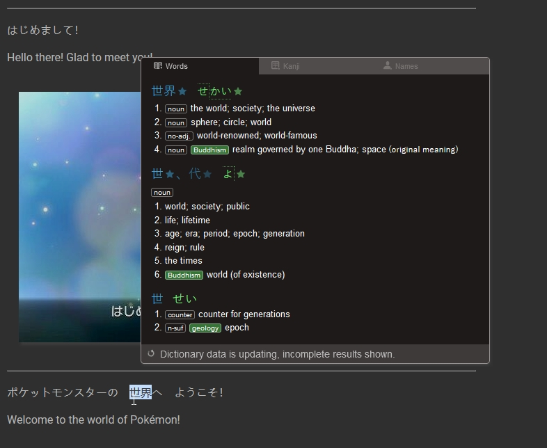

JRPG scripts
Information
This page was created so you could practice reading japanese with scripts from jrpgs.
They were made as anki decks first.
I took the script for the game, put the sentences in order if necessary and added the screenshots for every line of dialogue.
In some cases, the japanese line will be present, but the screenshot missing.
Important
Keep in mind that the english line is not a direct translation of the japanese sentence. They are from the english version of the game.
Yo-Kai Watch for example can have sentences that really differ from their original lines.
I added the possibility to toggle the english sentences if you don't want them. Click on the "Hide english" button.
How to Use
You can use Rikaikun, Yomichan or 10ten reader (Chrome / Mozilla).
Hover over Japanese text in the browser to have an instant dictionary pop-up.
What about grammar ?
If you're really beginning and lack grammar to understand the sentence even with the definition of every word,
I have an Anki Deck available.
It covers all the grammar for the JLPT 5 and 4.
I'm planning on adding the deck content on this website as well. Right now, it contains examples from anime, but I'll also add some from video-games
as well.
If you want to look up a specific point, you can also use the
google sheet that I made.